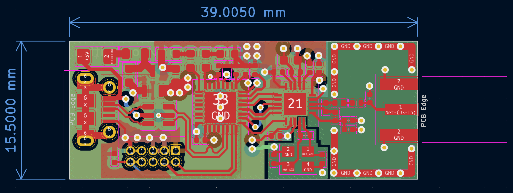
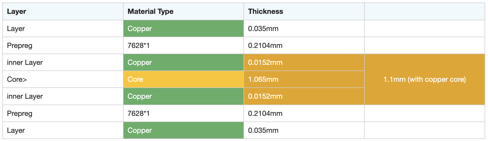
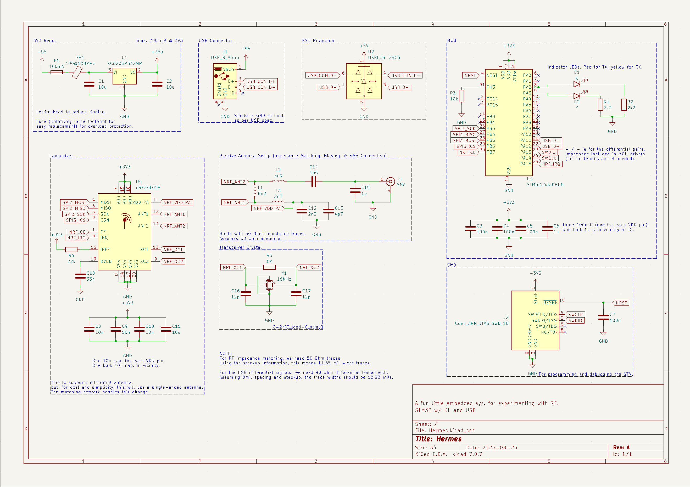

Hermes
This small PCB with a 2.4GHz RF transciever can be used to enable wireless communication which is capable of basic digital signal processing.
Project Details
During my time at Purdue, I took a course called Transmission of Information (ECE 44000). In this class, we learned all about the premises of wireless communication. This included the mathematical theory and practical methods behind various modulation/demodulation techniques like AM, FM, ASK, FSK, and PSK to name a few. We implemented many of these modulation techniques on software-defined radios in lab, but I always wanted to construct my own system at a lower level.
I made this board, named after the greek messenger god, with the goal to develop a small form factor system for some fun projects requiring RF communication. This project allowed me to practice my PCB design and embedded programming skills. More specifically, I gained hands-on experience with RF signal and high-speed digital signal design with a focus on signal integrity and EMI. I also wanted to experiment with different types of antennas, so this board is compatable with various 2.4GHz antennas. While it's definitely not the fastest RF system out there, it is more than enough for many consumer applications. For more information on the design, check out the project's Github repository below.
Image Gallery

The board layout for Hermes.

The PCB stackup. Manufactured by JLC PCB.

The circuit schematic for Hermes.